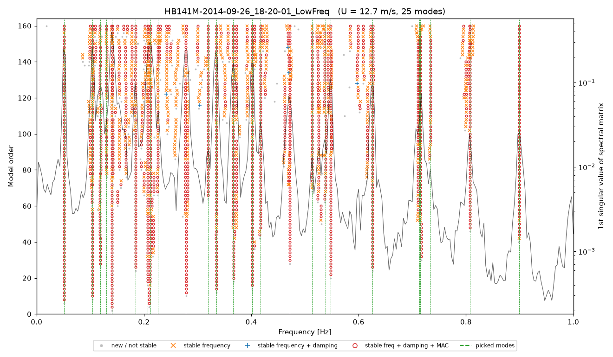

Operational Modal Analysis of the Hardanger Bridge
A fully automatic pipeline that identifies ~25 vibration modes of a 1310 m suspension bridge from 1,485 wind-triggered recordings, separates wind and temperature effects, measures aerodynamic damping and tests how small a stiffness loss could be detected.
Python
NumPy / SciPy
SSI-cov
Statistics
pytest